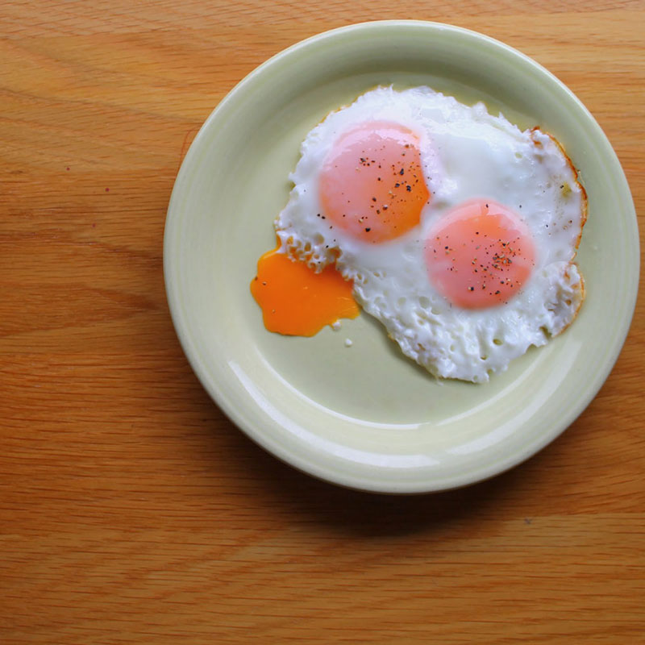
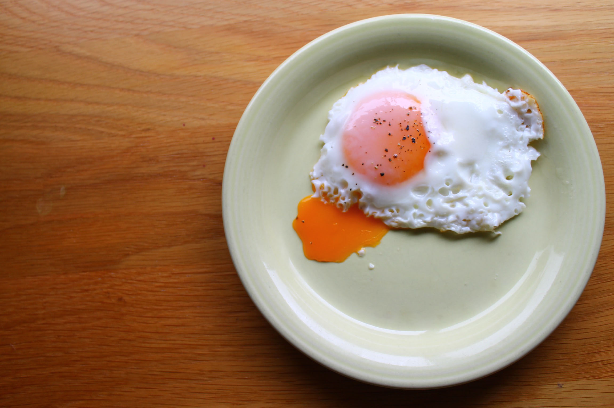
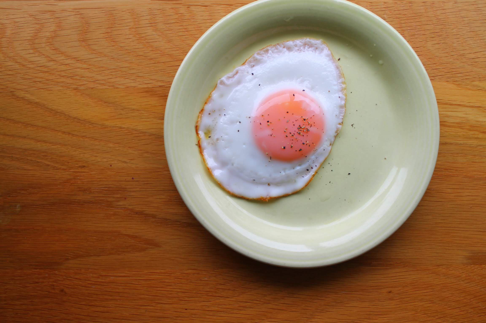
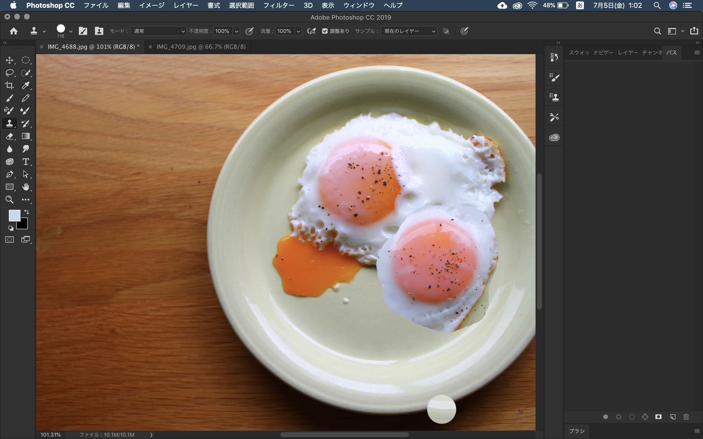
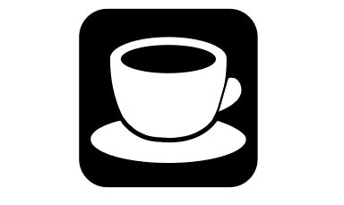

study
ソフトウェア・ネットワーク演習Ⅰ
●photoshop
目玉焼きの黄身増えたら面白い気がするって思ったのでとりあえず焼いてみる。
詳しく
画像編集
超下手なのができる。 あまりにも下手なのでもう一回く。 足す。

失敗してた方がなんか雰囲気良いので、失敗した方ベースの画像を作ることにした。
コピースタンプツールで黄身と白身をそれぞれつけて、なるべく自然になるように調整した。（効率が悪い）
●illustrator
ペンツールを使うのが下手すぎて大苦戦でしたという話。
詳しく
アイコン作りとりあえずコーヒー飲むことが増えてきたからコーヒーのアイコンにしよ〜て感じで決まる。
イラレ大初心者だったので、岸が手伝ってくれましたありがとう。
スクショ撮り忘れ